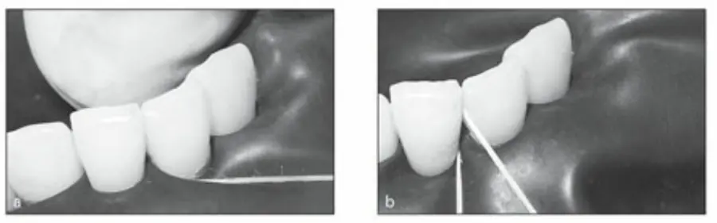
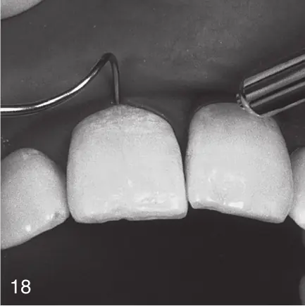

نسخه استخراجشده؛ ترجمه یا تأیید علمی انجام نشده است. وضعیت: captured
برای ترمیم کلاس I مولر اول پایین، ورق سالم است و از همهی تماسها رد شده. ولی هر بار که بیمار آب دهانش را قورت میدهد، کمی بزاق از دور گردن مولر به میدان میآید و همانجا میماند. لبهی ورق دور گردن دندان رو به اکلوزال ایستاده است. چه کاری مانده؟

لبهی ورق که دور گردن دندان است مثل یک دریچه کار میکند:
اینورت کردن یعنی برگرداندن لبهی ورق به درون سولکوس، دور گردن دندان. این کار سیل را کامل میکند. دستکم دور دندان یا دندانهایی که روی آنها کار میکنی اینورت کن.
ابزار اینورت فاسیال و لینگوال: سوند، پلاستیک اینسترومنت یا برنیشر beavertail.

راه دیگر: دندان را خشک کن، ورق را رو به لثه بکش و آرام رها کن.
اشتباه رایج: پس از اینورت بیندندانی با نخ، نخ را رو به اکلوزال بیرون میکشند و نخ لبهی ورق را هم با خودش برمیگرداند. بهجایش نخ را در سمت لینگوال روی خودش تا کن، دوباره از تماس رد کن و یک سرش را رو به فاسیال بکش تا نخ از سولکوس بغلتد و بیرون بیاید.
دندان تاجکوتاه، یا حفرهای که مرزش نزدیک لثه است، گاهی لیگاتور میخواهد تا لبهی ورق پایین بماند؛ اگر دندانهای کافی ایزوله شده باشند، معمولاً لازم نیست.